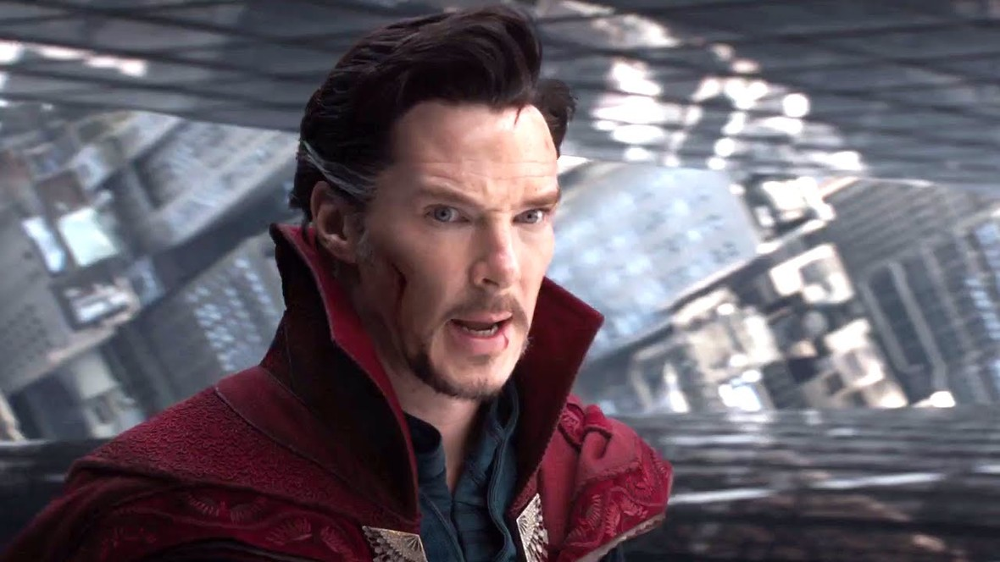

Doktor Strange
Doktor Strange (2016) -filmweb

Stephen Strange (Benedict Cumberbatch) jest aroganckim i ambitnym neurochirurgiem.
Jego życie wywraca się do góry nogami, gdy w wypadku samochodowym doznaje kontuzji rąk.
Po nieudanych próbach wyleczenia szuka porady u Jonathana (Benjamin Bratt),
który zdołał uleczyć się po złamaniu kręgosłupa. Zgodnie z jego wskazówkami Strange
udaje się w okolice Katmandu, gdzie poznaje uczniów Wonga (Benedict Wong)
i Mordo (Chiwetel Ejiofor) oraz mistrza Przedwiecznego (Tilda Swinton).
Wkrótce Strange odkrywa w sobie potężną moc.
Strona główna